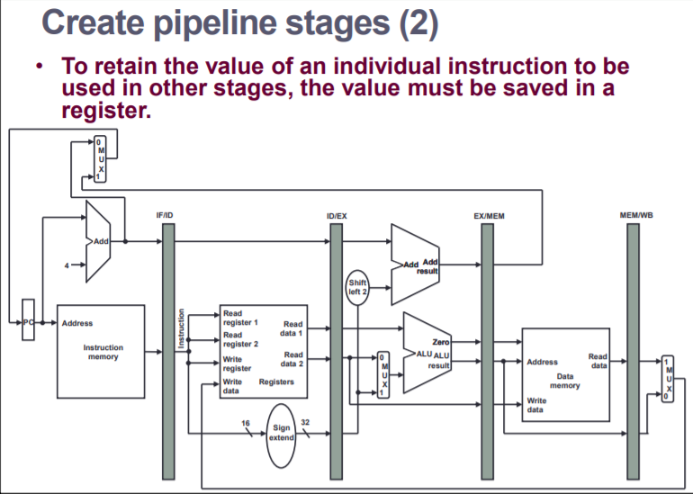

Week 3
Pipelined Processors
Pipelining is an implementation technique in which multiple instructions are overlapped in execution.
- The same principle is applied to pipelined processors over the 5 stages:
- Fetch Instruction from memory
- Read registers while decoding the instruction
- Execute instruction / calculate address
- Access an operand in data memory
- Write the result back to a register
Single Cycle vs Pipelined Execution
- Single Cycle, cycle time takes the time of the longest instruction (LW)
- Pipelined cycle time takes the time of the longest STAGE.
- Still, pipelined will be multiple times faster.
- The amount of speedup is approximately equal to the number of stages.
- This speed up is achieved by increasing instruction THROUGHPUT, the execution time is still going to be mostly the same.
- 1. All instructions are the same length. This makes decoding them easy.
- 2. Mips has only a few instruction formats with source reg in same spot all the time; this symmetry means the second stage can begin reading that reg file while also decoding the instruction.
- if that was not the case, this would have to be split into 2 separate stages --> results in 6 total instr.
- 3. The only memory operations we have are load and store, this reduces complexity --> allows us to use the execution stage to determine the address.
- 4. Alignment of memory operands means that memory access only takes one cycle.
A pipeline hazard is a situation where the queued next instruction cannot execute on the next clock cycle.
There are 3 types of hazars
Structural Hazards
- Structura hazards are hazards that occur because the structural design of the components in the processor cannot support the doing those instructions in that order/at the same time
- An example of this would be when two separate instructions try to access the same memory at the same time
Data Hazards
- Data Hazards occur when the next instruction doesnt have the data it needs yet
- E.g. add r3 r3 r2 - sub r4 r5 r3
- Here r3 is a dependancy for the sub, since it has to wait until the add is done to get the value of r3
- This means that if we wait for the add instruction to complete, we have effectively lost clock cycles.
- To fix these data hazards we implement forwarding or bypassing where the value of r3 as soon as it comes out the ALU is sent to be used in the sub instruction.
Control Hazards
- Control Hazards are hazards that occur due to control instructions (branches)
- When a branch happens we have to wait for the outcome i.e. where do we go from here? up or down?
- its perfectly fine to wait for the branch to finish, this is called a STALL
- Stalls can add up and become significant
-
The solution to control hazards is PREDICTION
- Static - always predict itll be yes. If it is yes then no wait, if not we must stall
- Dynamic - base the current prediction on the result of previous predictions. right now we are getting 90% correct
Pipelined Datapath and Control
- 5 stage partitioning
- green lines are right to left
- can be operation/component partitioning

- to pipeline, we add registers in between the components
- these registers are labelled depending on whats to the left and right of them
- it takes one clock cycle to go from one register to the next
- these registers must exist to hold onto the data
- there is no wb register as it goes straight to a register
- PC is also like a register
- Same logic as the single cycle control
- Control should be grouped by each stage since each signal is associated with a component which is active in one pipeline stage.